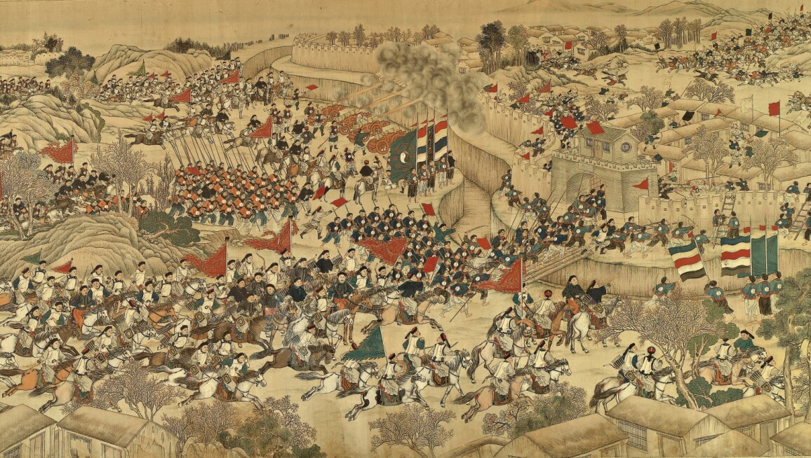

The Taiping Rebellion (1850-1864)
The Taiping Rebellion was a massive civil war that erupted in China from 1850 to 1864, led by a charismatic visionary named Hong Xiuquan. Hong, influenced by a fusion of Christian beliefs and Chinese millenarianism, proclaimed himself as the younger brother of Jesus Christ and founded the Taiping Heavenly Kingdom, with the goal of establishing a utopian society based on radical social and religious reforms.
The rebellion began in the southern province of Guangxi but quickly spread across southern China, garnering support from disaffected peasants, marginalized groups, and some intellectuals who were disillusioned with the Qing Dynasty's corrupt governance and economic hardship. The Taiping forces, known for their disciplined armies and zealous ideology, captured several key cities and gained control over vast territories, challenging Qing authority.
The conflict evolved into one of the bloodiest civil wars in history, characterized by brutal battles, atrocities, and widespread devastation. Millions of people perished, both civilians and combatants, as the Qing government struggled to suppress the rebellion with the help of regional militias, foreign mercenaries, and later, Western powers who intervened to protect their interests.
Ultimately, after more than a decade of fierce fighting, internal divisions, logistical challenges, and external pressure weakened the Taiping forces. The rebellion was finally quelled in 1864 when Qing forces, aided by Western military technology and strategies, captured the Taiping capital of Nanjing and defeated the remnants of the movement. Though the Taiping Rebellion ultimately failed to overthrow the Qing Dynasty, it left a lasting impact on Chinese society, politics, and culture, contributing to the erosion of imperial authority and paving the way for the tumultuous transformations of the late 19th and early 20th centuries.
Battle Location
| Qing Dynasty | Taiping Heavenly Kingdom | |
|---|---|---|
| Leader | Xianfeng Emperor | Hong Xiaqan |
| Strength | 3.4 million | 2 million |
| Victorious? | Yes | No |
| 30-40 million total losses |